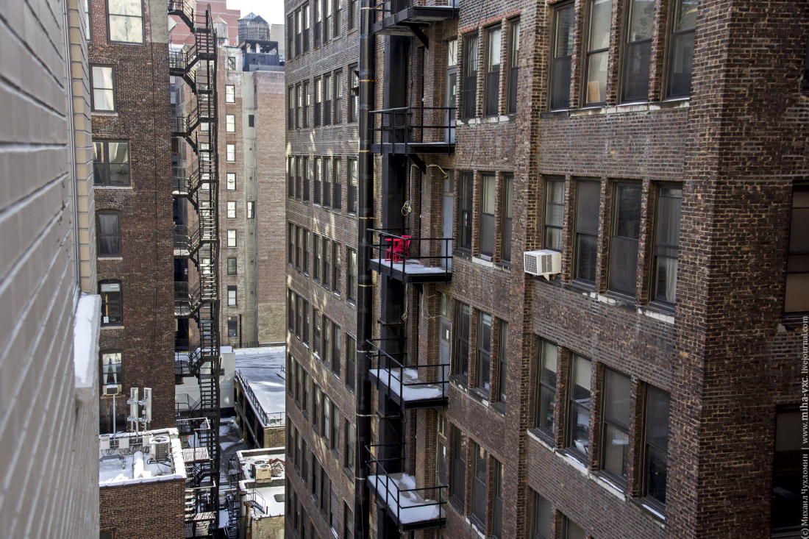

|

|
Тема: Он снова стоял там. Я не знаю, что делать.
Пишу прямо сейчас. Руки трясутся.
Всё началось с вида — шестнадцатый этаж, угол дома.
Когда снимал квартиру, не подумал, что стекло прозрачно в обе стороны.
Свет у меня, тьма — у соседей.
Напротив — другой небоскрёб, окна почти вровень. Ночью они как чёрные зеркала.
Иногда я замечал движение, вспышки, шевеление штор. А потом появился он.
Каждый вечер, как только я включал свет на кухне, в окне напротив возникала фигура.
Мужчина. Неподвижный, тёмный силуэт. Стоял прямо напротив, смотрел на меня.
Лица не видно — слишком далеко. Но взгляд ощущался. Физически. Как давление из темноты.
Я убеждал себя, что это просто странный тип. Но он появлялся слишком точно — будто ждал.
С тех пор живу с задвинутыми шторами. Всегда оставляю щель. Не могу иначе.
Иногда чувствую — оттуда кто-то смотрит. Проверяю замки. Сплю с ножом под подушкой.
А сегодня — всё.
Вернулся поздно. Окно напротив тёмное. Пустое. Налил воды, пытался не смотреть. Потом посмотрел.
На своём окне. Снаружи. Две расплывчатые ладони. И выше — круглое пятно — лоб, прижатый к стеклу.
Шестнадцатый этаж.
Я не знаю, что это было. Человек не мог подняться так высоко — тут гладкая стена без балконов.
Соседи не видели никого в том окне уже недели две. Может, вы сталкивались с чем-то похожим?
Что мне делать, если он вернётся?
|